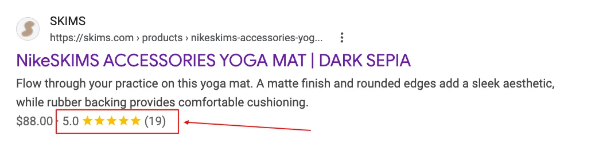
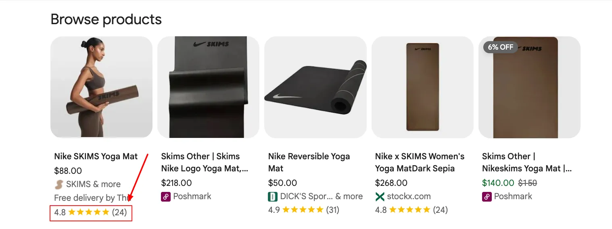
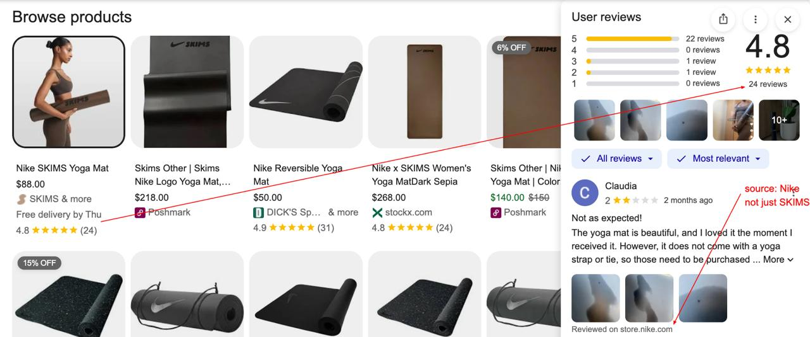
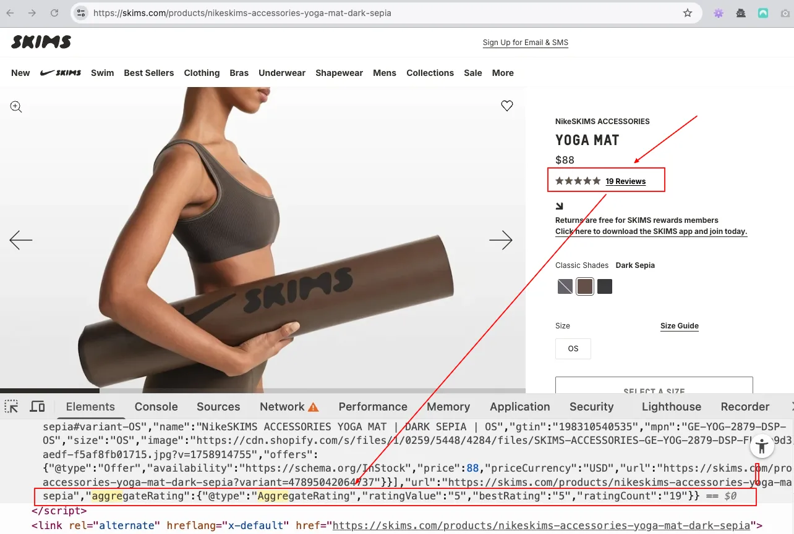

In Google Shopping results, two different star ratings can appear: one reflecting reviews of a specific product, the other reflecting the merchant's overall reputation as a business. Same visual format, same five-star scale. Different data, different eligibility rules, different setup entirely. Google loves a good star. It just doesn't always make it obvious which star is doing what.
Google Store Ratings and Google Product Ratings are easy to conflate. Same star format, similar name, both tied to Merchant Center. They are not the same thing. They measure different things, draw from different sources, and require different setup. Getting one does not get you the other.
This article covers how each system works: where the data comes from, what triggers display, what you can actually influence, and how the two relate on the same results page.
The difference at a glance
Before going deeper, here is the core distinction in one table.
| Store Ratings | Product Ratings | |
|---|---|---|
| What it measures | Overall experience with your business: service, shipping, returns | Quality of a specific product, based on buyer reviews of that item |
| Data source | Google-approved review partners, Google Customer Reviews, Google's own surveys | Shopping ads & free listings: your product review feed (XML, submitted to Merchant Center), approved third-party aggregators (Bazaarvoice, Trustpilot product reviews, Yotpo, etc.), reviews from other retailers for the same GTIN. Organic search snippets only: AggregateRating schema on your product pages (independent of Merchant Center, does not feed Shopping ads or free listings) |
| Matched by | Your domain / merchant URL | GTIN (primary signal), MPN + brand, or product URL. GTINs give the most reliable matching; alternatives result in fewer reviews correctly associated |
| Minimum threshold | 100 reviews, 3.5 stars or above (text ads); no minimum stated for organic Shopping | Shopping ads: 50 reviews total across catalogue, programme enrolment required; up to 2 weeks onboarding delay. Free listings: no enrolment required. Google may show aggregated reviews automatically; enrolment increases match likelihood |
| Where it appears | Google Search text ads, Shopping ads, free product listings in organic search, Google Shopping tab | Shopping ads (programme enrolment required); free product listings (may appear without enrolment); product knowledge panels; occasionally organic search snippets (via AggregateRating schema) |
| Old name | Google Seller Ratings (renamed 2023) | Product Ratings (unchanged) |
| Setup required | Review collection via approved partner or Google Customer Reviews; automatic once eligible | Shopping ads: application to Product Ratings programme in Merchant Center + review feed submission required. Free listings: no application required. Google may show aggregated reviews automatically; enrolment increases match likelihood. Organic snippets: AggregateRating schema on product pages (separate system, no application needed) |
| Who controls the score | Google aggregates from all sources; you influence via review collection strategy | Google aggregates from multiple sources: merchants, review aggregators, review sites, and Google users. GTIN accuracy determines how reliably reviews are matched to your products |
Google Store Ratings
Store Ratings (formerly Google Seller Ratings, renamed in 2023) are a business-level trust signal. They represent how customers rate their overall experience with your store: not any individual product, but the transaction as a whole. Shipping speed, customer service quality, returns handling, packaging.
When Store Ratings were known as Seller Ratings, the name implied they were purely an ads feature. That was largely true until October 2024, when Google expanded Store Ratings to show in organic search results as well, initially in the US, then rolling out to Australia, Canada, India and the UK. The stars now appear next to your domain name in organic product-related search results, not just on paid placements.

Where the data comes from
Google builds your Store Rating from three sources:
- Google-approved review partners — platforms like Trustpilot, Feefo, Yotpo, Shopper Approved, and others that are whitelisted by Google and submit aggregated store review data directly. If your customers review you on one of these platforms, those reviews feed into your Store Rating automatically once you meet the threshold.
- Google Customer Reviews — Google's own post-purchase survey programme. After a transaction, Google can email your customers a short satisfaction survey. Responses feed directly into your Store Rating. You enable this inside Merchant Center by adding a survey opt-in snippet to your order confirmation page.
- Google's own data signals — Google also uses its own shopping data and customer feedback mechanisms. The exact weighting is not published.
Google does not disclose the precise aggregation formula. Because of course it doesn't. What it does state: reviews must be genuine (no incentivised or solicited reviews that violate policies), must be about your store (not your products), and must come through an approved channel. You cannot submit reviews directly to Google yourself.
Eligibility thresholds
For Store Ratings to appear on Google Search text ads, the documented requirements are:
- At least 100 unique reviews in the past 12 months
- An average rating of 3.5 stars or above
- Your domain must be identifiable to Google as a seller
For organic search placements (the October 2024 expansion), Google has not published a separate threshold. In practice, the same review volume and quality signal appears to apply. Google rarely makes these things straightforward.
Where Store Ratings appear
- Google Search text ads — displayed as a star rating and review count beneath your ad headline, as an automated ad asset (previously called an extension). You don't add it manually; Google adds it when you're eligible.
- Google Shopping ads — displayed alongside your product listings in the Shopping tab and Shopping carousel.
- Free product listings in organic search — since the 2024 expansion, Store Ratings appear next to your merchant name in organic shopping results.
- Google Shopping tab — visible on both paid and free listings when browsing the Shopping tab directly.
Store Ratings are automated. You do not add them to your campaigns or configure placements. Google decides when and where to show them based on eligibility. The only thing you control is which review partners you use and how actively you collect reviews.
In organic search, Store Ratings appear most visibly on category, collection, and PLP-type queries: pages where Google is surfacing a merchant's range rather than a single product. On individual product pages, Product Ratings tend to dominate the star signal because they reflect reviews for that specific item. The practical implication: if your brand ranks for category-level queries ("Nike running shoes", "men's trail trainers"), Store Ratings are what shoppers will see next to your result. Which is a good reason to take review collection seriously, even if the 100-review threshold feels like a lot when you're at 47.
Google Product Ratings
Product Ratings operate at the product level: individual items, not your business as a whole. A rating of 4.7 stars on a Nike running shoe reflects what buyers think of that specific shoe. It says nothing about whether Nike shipped it on time.
There are two separate systems that produce product-level stars in Google search. They look the same in results. They are not the same. Google has not gone out of its way to explain the difference:
AggregateRatingschema markup — the SEO path. You add structured data to your product pages usingschema.org/AggregateRating, and Google can use it to display star ratings in organic search result snippets. This requires no Merchant Center programme, no application, no feed. It reflects the reviews you have collected and marked up on your own pages. See the full guide to ecommerce structured data and rich results for implementation detail.- Merchant Center Product Ratings programme — the Shopping path. A formal programme you apply to join. Once approved, you submit a product review feed (XML) to Merchant Center, and Google displays aggregated ratings on your Shopping ads and free listings. This is separate from schema and operates independently.

Where the data comes from
The data source depends on which system is producing the stars:
For organic search snippets (AggregateRating schema): the data comes from your own on-site reviews, marked up with schema.org/AggregateRating on your product pages. Google reads your structured data and may use it to display a star rating in organic results. You control this entirely: the reviews are yours, the markup is on your pages, no third party is involved.
For Shopping ads and free listings (Merchant Center programme): Google aggregates from multiple sources:
- Your product review feed — submitted directly to Merchant Center in XML format following Google's product reviews feed specification.
- Approved third-party aggregators — platforms like Bazaarvoice, PowerReviews, Trustpilot (product reviews module), and Yotpo that are approved to submit product review data to Google on your behalf.
- Other approved sources — Google states that star ratings are compiled from "merchants, review aggregators, review sites, and Google users." GTIN accuracy is critical here: Google uses GTINs as the primary matching signal to aggregate reviews for the same product across sources. Missing or inaccurate GTINs mean fewer reviews get matched to your listing. See GTIN and product identifiers for ecommerce for a full breakdown of identifier types and how to audit coverage.
AggregateRating schema, by contrast, reflects only the reviews you have marked up on your own pages — fully yours.
The same product URL can show two different star ratings in Google
In the organic blue-link result, the stars come from AggregateRating schema on your product page: your reviews, your markup, fully under your control. In the Shopping result for the same URL, the stars come from the Merchant Center programme, aggregated from multiple sources by Google. Both can be visible in the same SERP for the same product.
If the scores differ, that is why. They are drawing from different data, built by different systems, with no connection to each other. It is not a bug. It is just Google running two separate rating systems in parallel and not going out of its way to flag the discrepancy.
Here is a real example. The NikeSKIMS Yoga Mat sold on SKIMS.com:

AggregateRating schema on SKIMS.com. Only SKIMS' own reviews, exactly as marked up.
The Shopping result pulls in reviews from Nike.com alongside SKIMS' own, giving 24 reviews at 4.8. The organic snippet reflects only the 19 reviews SKIMS has marked up in their schema, giving 5.0. Same product, same URL, different stars. The data behind them comes from entirely different places.


AggregateRating schema on SKIMS.com: ratingValue: "5", ratingCount: "19". This is what powers the organic snippet stars — and only this.How Google matches reviews to products
The matching logic depends on how precisely the product can be identified:
- GTIN match — the most reliable. A globally unique barcode number identifies the exact product regardless of who sells it. Reviews from any source for that GTIN are aggregated together. This is why accurate GTIN submission in your Merchant Center feed matters for ratings, not just for Shopping eligibility.
- MPN + brand match — used when no GTIN is available. Less precise than GTIN matching because MPNs are only unique within a manufacturer's range, not globally.
- Product URL — a fallback when no identifier is available. Limits aggregation to reviews specifically about your listing.
The specificity of the search query also affects what gets aggregated. A specific search (brand + model + colour) will pull ratings aggregated only for that exact product. A generic search will show ratings where applicable across a broader set of results. For products with variants (sizes, colours), how you structure your schema (Product vs ProductGroup schema) affects which GTIN is associated with which listing.
Eligibility thresholds
- At least 50 reviews in total across all your products — required to participate. There may be a delay of up to 2 weeks after sign-up before ratings start appearing while your account is onboarded.
- Accurate product identifiers matter for eligibility — GTIN accuracy, consistent MPN and brand names across your product and review feeds, and completeness of product data all affect whether reviews are correctly matched and displayed. Discrepancies between feeds can prevent reviews from appearing. The Merchant Listing schema generator can help you validate identifier fields in your structured data.
- Programme participation is required for Shopping ads. For free listings, Google may display aggregated product reviews compiled from multiple sources regardless of whether you have applied — participation is not required for free listings, but it increases the likelihood of reviews being matched to your products.
Where Product Ratings appear
- Google Shopping ads — star ratings beneath the product image, title and price in Shopping carousel results. Requires programme enrolment and an approved review feed.
- Free product listings — Shopping tab and organic Shopping results. Google may display aggregated product reviews here even without programme enrolment, compiled from multiple sources. Enrolment increases the likelihood of reviews being matched to your listings.
- Product knowledge panels — when a product has a knowledge panel in Google Search, aggregated ratings may appear there.
- Organic search result snippets — star ratings in organic snippets come from
AggregateRatingschema on your product pages, not from the Merchant Center Product Ratings programme. These are separate systems.
Two ratings, one results page
On a competitive shopping query, both types of rating can appear in the same set of results, sometimes on the same listing. A Shopping result for Nike trainers can show a Store Rating (4.8 stars, Nike's overall store experience) alongside a Product Rating (4.6 stars, this specific trainer model). Same star format, completely different data.
The practical implication: a merchant can have a high Store Rating and a low Product Rating, or vice versa. A retailer with excellent customer service but a flawed product will show that in the data. A retailer with a great product but poor logistics will show that too. They are independent signals that Google uses for independent purposes.
| Placement | Store Rating shown? | Product Rating shown? |
|---|---|---|
| Google Search text ads | Yes, automated asset | No |
| Google Shopping ads (carousel) | Yes | Yes, programme enrolment required |
| Free product listings (Shopping tab) | Yes | Yes, may appear without enrolment; enrolment increases likelihood |
| Organic search results (product queries) | Yes (since Oct 2024 expansion) | Occasionally, via AggregateRating schema (independent of Merchant Center programme) |
| Product knowledge panels | No | Yes |
| Rich result snippets (structured data) | No | Yes, via AggregateRating schema on product pages (separate from Merchant Center programme) |
What you actually control
Both rating types are ultimately aggregated and displayed by Google. But your level of influence differs significantly between them.
Setting up each programme
Setting up Store Ratings
Store Ratings are not something you switch on directly. The process is:
- Choose an approved review collection method: a Google-approved third-party review partner (Trustpilot, Feefo, Yotpo, Shopper Approved, and others) or Google Customer Reviews.
- If using Google Customer Reviews: enable it in Merchant Center under "Programs", then add the survey opt-in snippet to your order confirmation page.
- If using a third-party partner: the platform handles the feed submission to Google once you connect your Merchant Center account. Each platform has different integration steps.
- Collect at least 100 reviews with a 3.5+ average. Once eligible, Google adds the Store Rating automatically to your ads and organic placements — no campaign-level configuration needed.
There is no application form for Store Ratings. Eligibility is assessed automatically.
Setting up Product Ratings
To show Product Ratings on Shopping ads, you must enrol in the programme. For free listings, Google may show aggregated reviews without enrolment, but enrolling and submitting a feed makes matching more reliable. The enrolment steps are:
- Option A — use a supported review aggregator: if you already work with a platform like Bazaarvoice, Trustpilot, Yotpo, or PowerReviews, ask them to submit your product reviews to Google on your behalf. No sign-up form required on your end.
- Option B — submit directly: in Google Merchant Center, go to Programs and sign up for Product Ratings. Once enrolled, prepare your product review feed in XML format (following Google's product reviews feed specification) and submit it to Merchant Center. Monthly updates are required; more frequent uploads are recommended.
- Either way, allow up to 2 weeks after your first submission for ratings to start appearing. Reviews take up to 7–10 days to sync after upload.
Which review platforms support which programme
Not all review platforms support both programmes. Google Customer Reviews, for instance, can contribute to Store Ratings but has limited product-level capability for Product Ratings. Most major review platforms support both, but it's worth confirming before committing to a platform for both use cases.
| Platform | Store Ratings feed | Product Ratings feed |
|---|---|---|
| Google Customer Reviews | Yes | Limited (survey-based) |
| Trustpilot | Yes | Yes (product reviews module) |
| Yotpo | Yes | Yes |
| Feefo | Yes | Yes |
| Bazaarvoice | No | Yes |
| PowerReviews | No | Yes |
| Shopper Approved | Yes | Yes |
Bazaarvoice and PowerReviews are enterprise product review platforms with no store-level review feed to Google. They focus entirely on product review syndication. If Store Ratings are a priority, they are not sufficient on their own.
Which to prioritise
If you are starting from zero and can only work on one programme at a time, the decision depends on where you're running and what you're optimising for.
Prioritise Store Ratings if: you're running Google Search text ads (Store Ratings improve CTR on text ads directly), you sell across a broad product range (a single store-level trust signal covers everything rather than needing per-product reviews), or you're in a category where service differentiation matters: fashion returns, high-ticket items, subscriptions.
Prioritise Product Ratings if: you're competing in the Shopping tab where product-level stars are the dominant trust signal on the listing itself, your products have GTINs and are sold by multiple retailers (positive product ratings aggregate across all of them, giving you a lift from the market), or you're in a category where product quality is the primary purchase driver.
In practice, most merchants want both. They answer different questions a buyer has at the same moment: "Is this product good?" (Product Rating) and "Is this store going to be a nightmare to deal with?" (Store Rating). On a Shopping result page, both signals are visible simultaneously, and a competitor who has both, when you have neither, is at a meaningful advantage. Google will not remind you of this unprompted.
Frequently asked questions
AggregateRating markup on your product pages is separate — it can trigger star ratings in organic results but does not feed the Merchant Center Product Ratings programme.schema.org/AggregateRating on your product pages is separate from both programmes. It can enable star ratings in organic search snippets for your own pages, but it does not contribute to Google's Merchant Center Product Ratings and has no relationship to Store Ratings. They are independent systems with different data inputs.Product schema on your pages does not feed into the Merchant Center Product Ratings programme. What structured data does affect is your product's eligibility for rich results in organic search (via AggregateRating markup) — a different placement from Shopping. For Shopping Product Ratings, the feed submitted to Merchant Center is what matters, not your on-page schema.Sources
- Google Merchant Center Help: Store ratings overview
- Google Ads Help: About store ratings
- Google Merchant Center Help: Product Ratings basics
- Google Merchant Center Help: Product Ratings eligibility
- Google Merchant Center Help: Product Ratings policies
- Google Search Central Blog: Bringing Store ratings on Search to more countries (October 2024)
- Google for Developers: Product Review Feeds specification
- MagsTags: Google eCommerce Rich Results 2026: Complete Guide — full coverage of all rich result types including Store and Product Ratings in context
- MagsTags: GTIN and product identifiers for ecommerce SEO — GTIN, MPN, SKU and brand: what each field does and how to audit coverage
- MagsTags: Ecommerce structured data and rich results — implementation guide for product schema at scale, including AggregateRating
- MagsTags: Product vs ProductGroup schema — when to use each type and how variants affect identifier matching
- MagsTags: Merchant Listing schema generator — generate and validate product structured data with GTIN and identifier fields